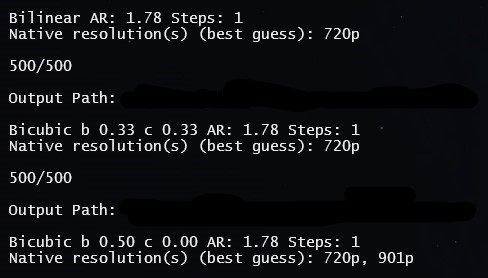
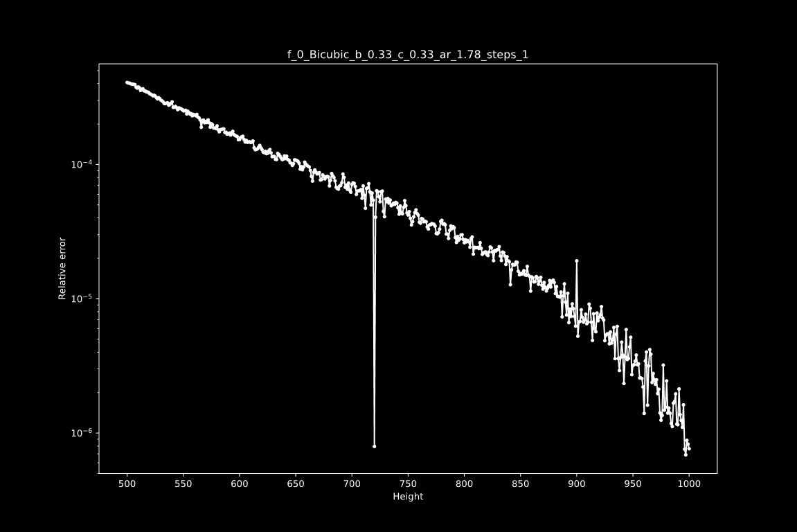

Primero, veremos la parte más básica de VapourSynth:
Dependeremos bastante de scripts, por lo que tendremos que importarlos para poder trabajar con ellos.
Una vez tenemos el .vpy creado, lo primero que importaremos será vapoursynth:
import vapoursynth as vsAhora, para tener más fácil acceso a plugins internos de VapourSynth, declararemos:
core = vs.coreY para importar scripts, simplemente tendremos que hacer como con vapoursynth:
import fvsfunc as fvf #con “as” estamos indicando el nombre con el que llamaremos al scriptTambién podemos importar una única función:
from fvsfunc import DepthPor último, también podemos establecer un límite de memoria para el filtrado. Se recomienda establecerlo en 2000 menos de la RAM de la que se dispone. Por ejemplo, yo tengo 16 GiB, así que:
core.max_cache_size = 14000Para importar prácticamente cualquier vídeo utilizaremos L-SMASH-Works. Además, trabajaremos el vídeo en 16 bits, así que usaremos Depth de fvsfunc, mvsfunc, o cualquier otro.
#source
src = core.lsmas.LWLibavSource(r"G:\Encode\.vscode\Scripts\[WEB]\Bocchi the Rock!\src\01.mkv")
video = src #declaramos que “video” es igual a “src”
video = Depth(video, 16) #pasamos el vídeo a 16 bits. Primero llamamos a la función y, dentro de ella, primero ponemos qué pasar a 16 bits, y segundo la profundidad en bits, 16.Por otro lado, para DVD en los que un mismo vídeo está repartido en varios archivos, tendremos que crear un archivo .d2v para luego poder importarlo como un único vídeo. Para crear el archivo, usaremos D2VWitch.
Una vez ejecutado el programa, arrastramos todas las partes que formen el vídeo completo, seleccionamos que extraiga el audio y hacemos click en “Engage”. Cuando haya finalizado, tendremos el audio y un archivo .d2v.
Ahora, de vuelta en VapourSynth, para importar el .d2v pondremos lo siguiente:
src = core.d2v.Source(r"G:\Encode\.vscode\Scripts\[BD-DVD]\Romeo x Juliet\src\01-02\VTS_01_1.d2v")[0:42558]
video = src
video = Depth(video, 16)Al final, los números que están entre corchetes son los frames de inicio y final+1. Es decir, el episodio comienza en el fotograma 0 y acaba en el 42557. Para el siguiente episodio sería igual:
src = core.d2v.Source(r"G:\Encode\.vscode\Scripts\[BD-DVD]\Romeo x Juliet\src\01-02\VTS_01_1.d2v")[42558:85986]El episodio empieza cuando acaba el previo, y finaliza en el último fotograma del vídeo, el cual podemos ver en D2VWitch.
Por último, exportaremos el vídeo para procesarlo con x264 o poder previsualizarlo con vs-preview:
#Final
out = video #declaramos “video” como “out”
final = Depth(out, 16) #declaramos “final” como “out” a 16 bits
final.set_output() #establecemos “final” como la salidaEl vídeo siempre lo sacaremos a 16 o a 8 bits, ya que son los bits que admite x264 de entrada. En caso de tratar de importar un vídeo a 10 bits, lo convertirá a 16 bits y de nuevo a 10 bits (o a 8, según los bits que hayamos especificado). De esa manera, evitamos conversiones innecesarias.
Hay una gran cantidad de series que están animadas a resoluciones inferiores, pero que fueron reescaladas a una resolución mayor. En la mayoría de los casos, esto no supondrá mejoras en el vídeo, e incluso hará que se vea peor, por lo que preferiremos devolver el vídeo a su resolución original. ¿Y cómo averiguamos su resolución original? Pues para ello usaremos getnative, que instalaremos mediante pip:
py -m pip install getnativeAhora, con una captura que hayamos hecho de un fotograma claro con el menor desenfoque posible y sin efectos (o muchos efectos), ejecutamos el siguiente comando, donde %1% es la ruta a la imagen (preferiblemente podemos crear un .bat y arrastar la imagen en él) y --output-dir donde guardará los resultados.
py -m getnative --mode "all" --output-dir G:\getnative %1%Probará con varios kernels y estimará cuál es la resolución nativa. Dentro del terminal aparecen estas resoluciones, pero preferiblemente iremos a donde ha guardado las gráficas y las revisaremos.
 Claramente señala que es 720p, que es la resolución nativa de Sword Art Online, con la cual he probado. Ahora, quedaría probar con distintos kernels y comprobar por cuenta propia cuál se ve mejor.
Sin embargo, comprobemos ahora una serie que esté animada a 1080p o a una resolución superior a 900p (o simplemente un mal fotograma de una que sí lo esté).
Aquí podemos observar claramente que no se puede ni debe desescalar.
En caso de que tengamos que hacerlo, importaremos la función desde fvsfunc y la usaremos:
from fvsfunc import Despline36M #la “M” ayuda con elementos que sí están en 1080p, como créditos, creando una máscara y escalándolos mediante Spline36
#Descale
descale = Despline36M(videod, 1280, 720)from fvsfunc import DebicubicM
descaled = DebicubicM(aa, 1280, 720, b=1/3, c=1/3)También podemos intentar realizar un upscale que quede “bonito” de vuelta a 1080p, algo conveniente cuando salen resoluciones raras:
from nnedi3_rpow2 import *
scaled = nnedi3_rpow2(descale, nns=4, qual=2, pscrn=1).resize.Spline64(1920, 1080)En ocasiones tendremos que cambiar la resolución del vídeo, como en el caso anterior. Para ello, principalmente usaremos core.resize.[kernel]. Además, la función de resize también nos puede servir para transferir espacios de color y el formato, entre otras cosas. También disponemos de escaladores basados en redes neuronales, que son una buena opción al hacer upscale, como nnedi3_rpow2.
downscale = core.resize.Spline36(video, 1280, 720)
upscale = nnedi3_rpow2(descale, nns=4, qual=2, pscrn=1).resize.Spline64(1920, 1080)
dtl_mask = core.resize.Spline16(mask, format=vs.GRAY16) #cambiar el formato a GRAY16
switch_colorspace = core.resize.Spline16(dvd, transfer_in_s=”709”, matrix_in_s="709") #transferir el espacio de color a 709Es muy importante crear máscaras, pues algunos filtros resultan muy destructivos y pueden cargarse los detalles. Con las máscaras buscamos evitar que eso ocurra en la medida de lo posible.
Existen muchas máscaras, y también se pueden crear manualmente.
Esta es una máscara para dehalo. La podemos encontrar en https://pastebin.com/raw/2uziEgxr.
from dhh import mask as dehalo_mask
dh_mask = dehalo_mask(aa, smooth=True, dha=True)Es una máscara para detalle, a usar cuando se hace denoise/deband.
from lvsfunc import mask as lvfmask
deband_mask = lvfmask.detail_mask(video, rad=1, brz_a=0.025, brz_b=0.039)
deband_mask = lvfmask.detail_mask_neo(masked_dehalo, detail_brz=1000, lines_brz=2750) #variante que trata de conservar el mayor detalle posibleOtra máscara de detalle, pero con más precisión en escenas con poco brillo.
from kagefunc import retinex_edgemask
dtl_mask = retinex_edgemask(video)Lo usaremos para juntar dos vídeos mediante una máscara. El primer valor será el vídeo filtrado, el segundo el vídeo antes de ese filtro (o ese filtro pero más suave) y lo último la máscara.
aa = core.std.MaskedMerge(aa_a, aa_b, edge_mask)Para esto, tenemos dos opciones:
Este es el que querremos usar normalmente.
from debandshit import dumb3kdb
deband = core.average.Mean([
dumb3kdb(video, radius=18, threshold=[20, 16], grain=[24, 12]),
dumb3kdb(video, radius=21, threshold=[32, 24], grain=[24, 12])
]).std.MaskedMerge(video, deband_mask)Es algo más fuerte, por lo que puede ayudar con banding más complicado de disimular, pero a su vez puede llevarse mucho detalle.
from debandshit import placebo_deband as placebo
deband = placebo(video, radius=17, threshold=2.8, iterations=2, grain=[6, 0])
debanded = core.std.MaskedMerge(deband, video, deband_mask)También puede combinarse con dumb3kdb:
from debandshit import dumb3kdb, placebo_deband as placebo
#Deband
debanded = core.average.Mean([
dumb3kdb(denoised, rad=17, thr=[20, 24], grain=[24, 12]),
dumb3kdb(denoised, rad=21, thr=[32, 24], grain=[24, 12]),
placebo(denoised, rad=6, thr=2.8, itr=2, grain=6)
]).std.MaskedMerge(video, deband_mask)Rara vez necesitaremos una alternativa a core.deblock.
deblock = core.deblock.Deblock(video, quant=28)
deblock = core.std.MaskedMerge(deblock, video, dtl_mask)Este suele ser el punto más complicado, pues conseguir un buen equilibrio entre conservar detalle e intentar que el aliasing “desaparezca” es muy tedioso.
La función preferida para esto es xaa, aunque hay quienes crean la suya propia. La descargaremos de aquí.
from xaa import *
aa = xaa(video, mode=”di3 nnedi3cl”, mask=1, nns=4, mthr=8)Más información: https://github.com/dubhater/vapoursynth-xaa
Podemos usar Dehalo_alpha (de havsfunc) o fine_dehalo (de vsdehalo).
from havsfunc import DeHalo_alpha
from dhh import mask as dehalo_mask
dh_mask = dehalo_mask(video, smooth=True, dha=True)
dehalo = DeHalo_alpha(video, rx=1.8)
dehalo = core.std.MaskedMerge(dehalo, video, dh_mask)from vsdehalo import fine_dehalo, edge_cleaner
dehalo = fine_dehalo(aa, rx=1.8, darkstr=0)
dehaloed = edge_cleaner(dehalo, 5.75, hot=True, smode=True)edge_cleaner (sirve para limpiar los bordes, como el nombre indica):
from havsfunc import HQDeringmod
dering = HQDeringmod(video, mthr=24)Las funciones más normales a usar son BM3D y KNLMeansCL, empleadas normalmente juntas (BM3D para el plano Y y KNLMeansCL para los planos UV).
from lvsfunc import mask as lvfmask
from vsutil import get_y
from mvsfunc import BM3D
from muvsfunc import MergeChroma
from vardefunc import noise, decsiz
#Denoise
d_mask = lvfmask.detail_mask(video, sigma=2, rad=1, brz_a=0.026, brz_b=0.0023)
luma = get_y(dehaloed) #extraemos el plano Y
denoise_Y = BM3D(luma, radius1=1, profile1='fast', sigma=[2.5,0.0,0.0]) #aplicamos denoise a Y
denoise_UV = core.knlm.KNLMeansCL(dehaloed, d=2, a=3, h=0.4, device_type='gpu', device_id=0, channels="UV") #aplicamos denoise a los planos UV
denoise = MergeChroma(denoise_Y, denoise_UV) #juntamos el plano Y con los planos UV
denoised = core.std.MaskedMerge(denoise, dehaloed, d_mask)Una función para aumentar la compresibilidad difuminando el ruido invisible que se encuentre por encima de max_in manteniéndolo por debajo de min_in.
from vardefunc import decsiz
denoised = decsiz(denoised, min_in=208 << 8, max_in=240 << 8)El desentrelazado y el detelecine son algo muy extenso. No hay una solución mágica para todo; hay que jugar mucho e investigar para poder desentrelazar correctamente el vídeo. En el siguiente script, tuve que dividir el vídeo en tres partes (episodio, ending y avance) y aplicar un método distino a cada una para luego volver a unirlas.
from fvsfunc import OverlayInter
from havsfunc import QTGMC
ep = video[0:38975]
ed = video[38975:41670]
av = video[41670:43428]
IVTC_ep = core.tivtc.TFM(ep, mode=6, PP=4, field=1, slow=2, cthresh=8, micmatching=3, clip2=QTGMC(ep, Preset='Very Slow', SourceMatch=2, TFF=True, FPSDivisor=2, Sharpness=0.4, TR2=3))
IVTC_ep = core.tivtc.TDecimate(IVTC_ep, mode=1)
IVTC_ed = OverlayInter(ed, pattern=0, tff=True)
IVTC_av = core.tivtc.TFM(av, mode=6, PP=4, field=1, slow=2, cthresh=8, micmatching=3, clip2=QTGMC(av, Preset='Very Slow', SourceMatch=2, TFF=True, FPSDivisor=2, Sharpness=0.4, TR2=3))
IVTC_av = core.tivtc.TDecimate(IVTC_av, mode=1)
IVTC = IVTC_ep + IVTC_ed + IVTC_avgrain = core.grain.Add(video, var=1.0, uvar=0.0, seed=-1, constant=True)from kagefunc import adaptive_grain
grain = adaptive_grain(video, strength=0.25, static=True, luma_scaling=12, show_mask=False)Versión modificada del anterior.
from adptvgrnMod import *
grain = adptvgrnMod(deband, strength=0.25, luma_scaling=10, size=1.25, sharp=60, seed=69420, show_mask=False)from vardefunc import noise
#Grain
grain = noise.Graigasm(
thrs=[x << 8 for x in (32, 80, 128, 176)],
strengths=[(0.25, 0.0), (0.20, 0.0), (0.15, 0.0), (0.0, 0.0)],
sizes=(1.25, 1.20, 1.15, 1),
sharps=(80, 70, 60, 50),
grainers=[
noise.AddGrain(seed=69420, constant=False),
noise.AddGrain(seed=69420, constant=False),
noise.AddGrain(seed=69420, constant=True)
]).graining(detail)
x264 no puede interpretar directamente los scripts de VapourSynth, así que primero pasan por VSPipe, el cual actúa como intérprete.
vspipe.exe "%script%" - -c y4m | x264.exe --demuxer y4m %params% -o "%out%" -Con esta versión modificada podemos saltarnos el uso de VSPipe y cargar directamente el script.
x264.exe %params% -o "%out%" "%script%"